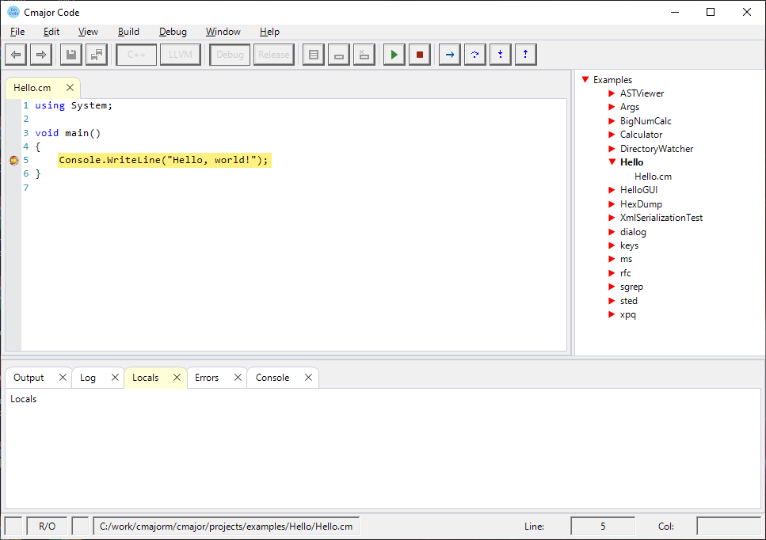
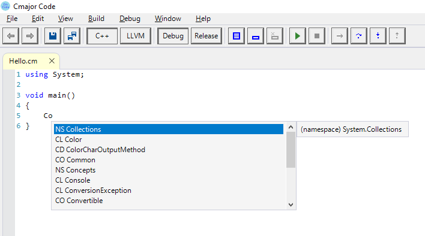
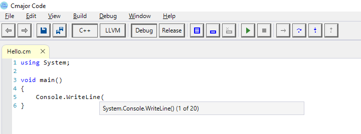

Cmajor Code is a new IDE for Cmajor for Windows. It was first written in the Cmajor programming language, but due to mysterious slowing problem it was converted to C++. You can edit, compile, debug, and run programs from cmcode.
The editor contains basic editing functionality, copy/cut/paste and undo/redo.
cmcode provides compiling of projects and solutions by launching cmbs, a build server written in C++. The build server contains Cmajor compilers for LLVM and C++ backends.
When a program has been compiled using the C++ backend, it can be debugged from cmcode. The debugging functionality is provided by running cmdb, a debugger that drives GDB. The debugger is a C++ program.
Programs can be run from cmcode by selecting Debug | Start Without Debugging menu item. The input and output of a console program is directed to the Console window included in the IDE.
You can have many instances of cmcode running at the same time. The IDE obtains unique TCP port numbers from cmpms, a port map server, that has a range of free port numbers. The port number range that the port map server delivers is in the C:\cmajor\config\cmpm.config.xml configuration file.
The port number server can be stopped and restarted from the Cmajor Port Map Monitor that can be started from the IDE by selecting View | Port Map.
When editing code, the IDE obtains possible symbols for the current editing context from the Cmajor code completion server (cmccs) and shows them in a code completion list:
The code completion list contains a category, name, description and details for each symbol that starts with letters typed. The categories of the symbols are shown in the following table:
| Category | Description |
|---|---|
| AR | array type |
| BT | basic type |
| CL | class |
| CO | concept |
| CN | constant |
| DG | delegate |
| CD | class delegate |
| ET | enumerated type |
| EC | enumeration constant |
| FN | function |
| IN | interface |
| KW | keyword |
| NS | namespace |
| TP | template parameter |
| TY | typedef |
| PA | parameter |
| MV | member variable |
| LV | local variable |
| GV | global variable |
| SY | other symbol |
The code completion list keyboad shortcuts are shown in the following table:
| Key | Description |
|---|---|
| enter | select entry |
| down arrow | next entry |
| up arrow | previous entry |
| page down | next page |
| page up | previous page |
| ESC | hide code completion list |
| control space | show code completion list |
When a code completion entry is selected with the ENTER key, and the selected symbol is a function, class or concept symbol, a parameter help window is shown:
When the selected symbol is a function symbol, the parameter help window shows the overloads of that function. The down arrow key selects the next overload and the up arrow key selects the previous overload.
When the selected symbol is a class symbol, the parameter help window shows classes that have the same name but different template parameter arities. The down arrow key selects the next class and the up arrow key selects the previous class.
When the selected symbol is a concept symbol, the parameter help window shows concepts that have the same name but different template parameter arities. The down arrow key selects the next concept and the up arrow key selects the previous concept.